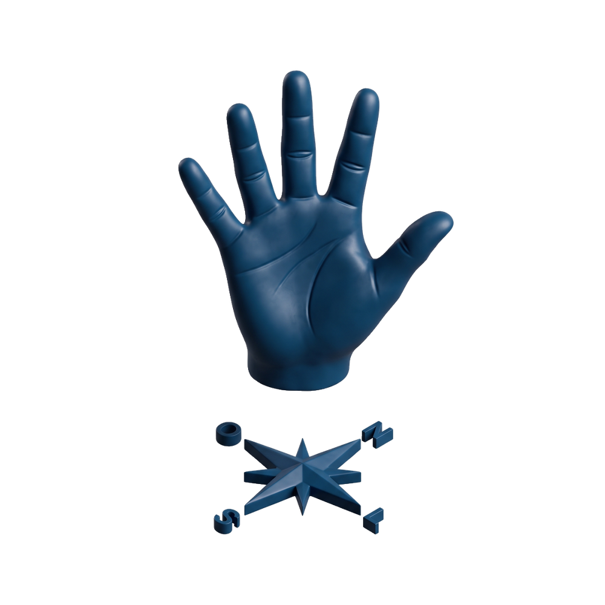
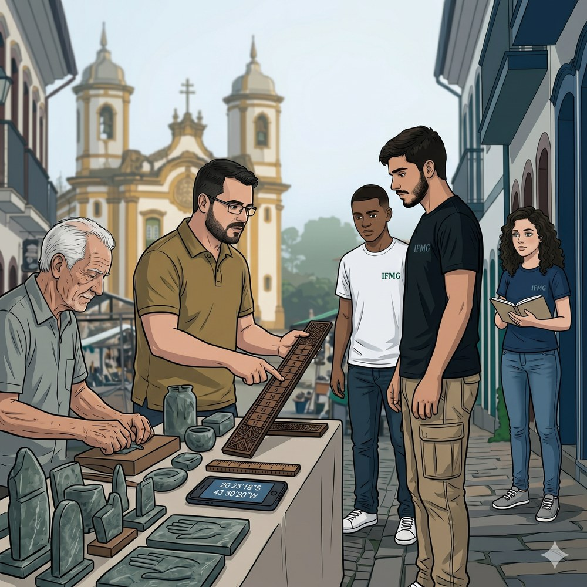
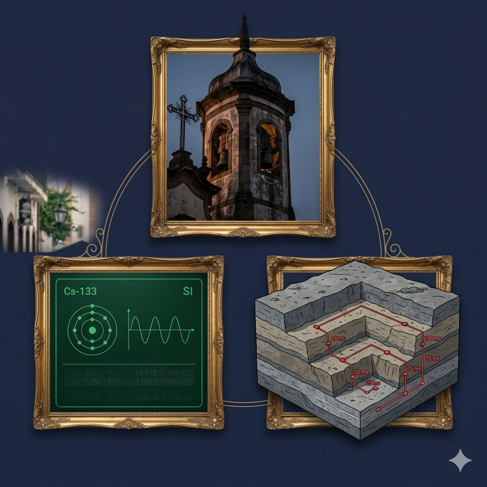
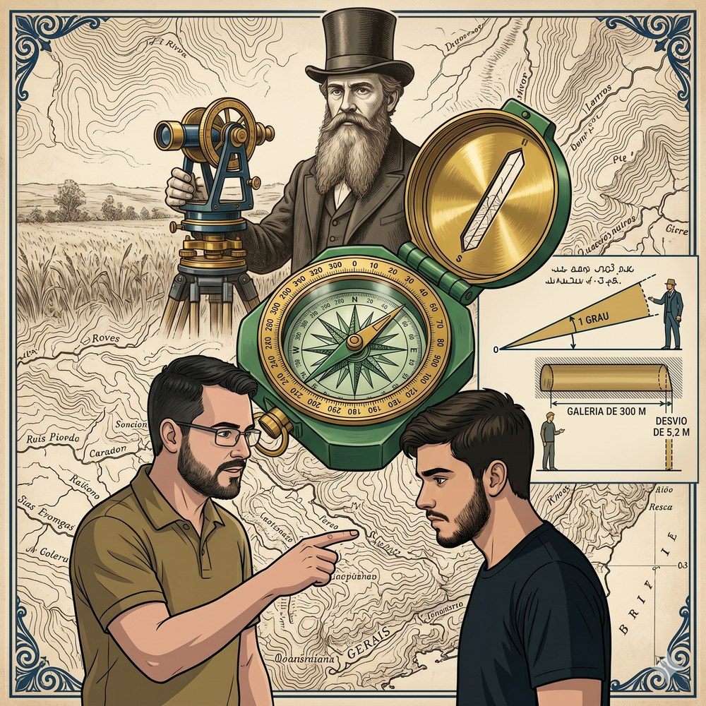
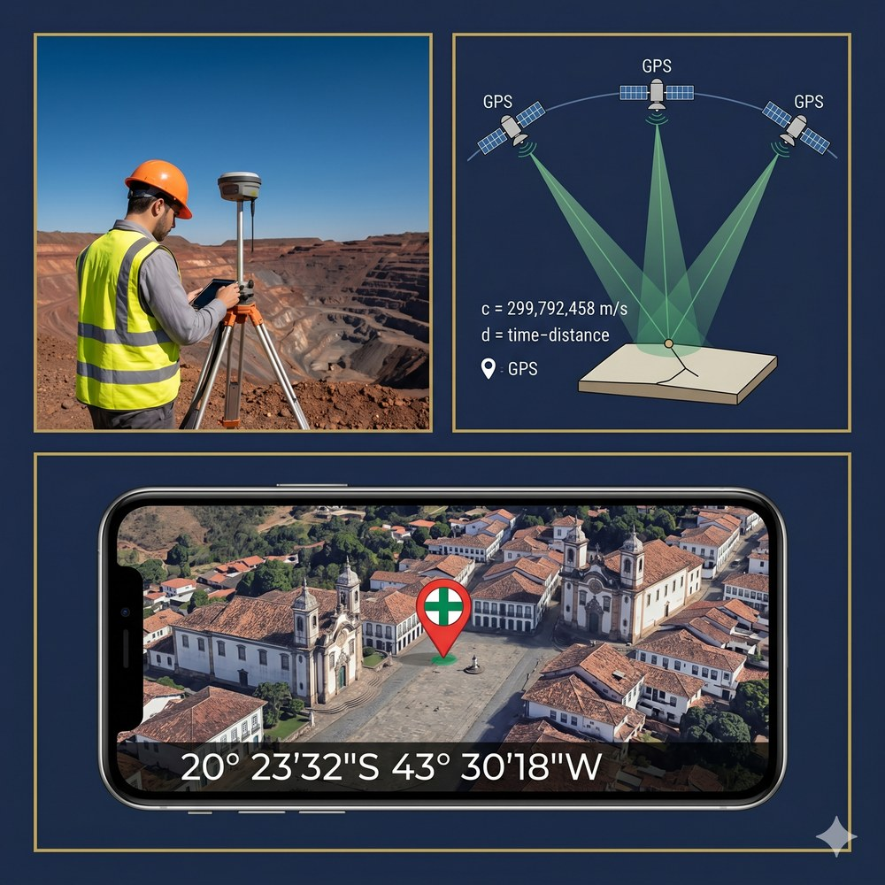
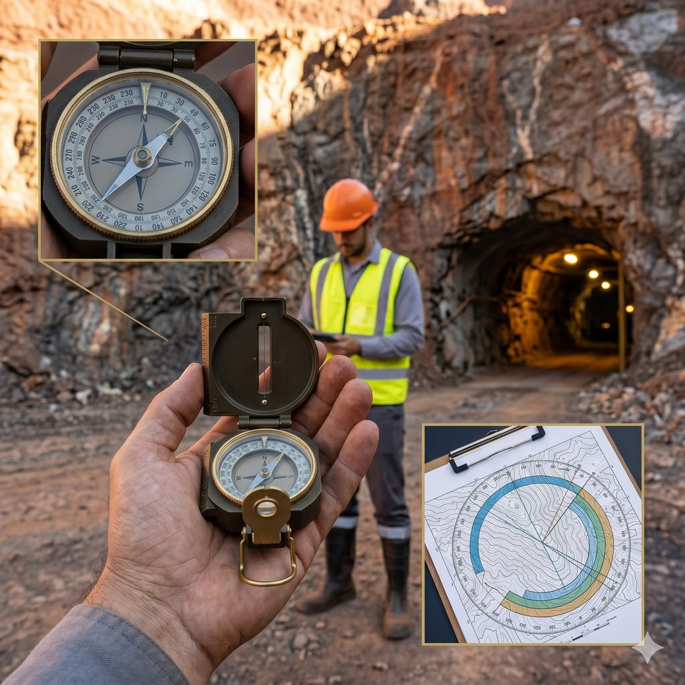
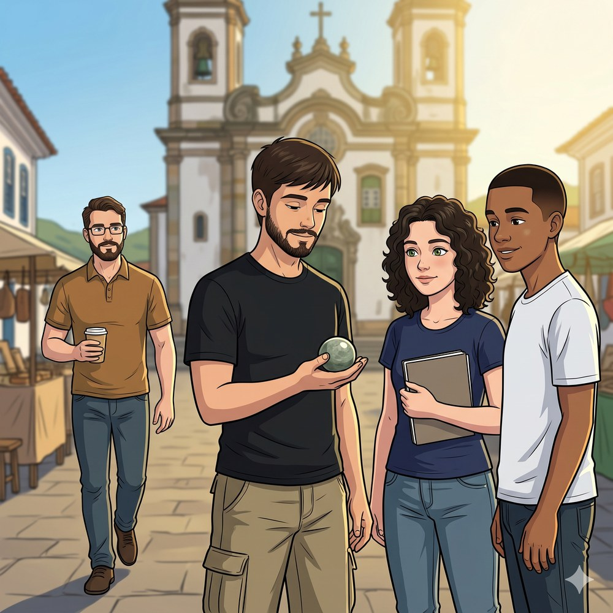
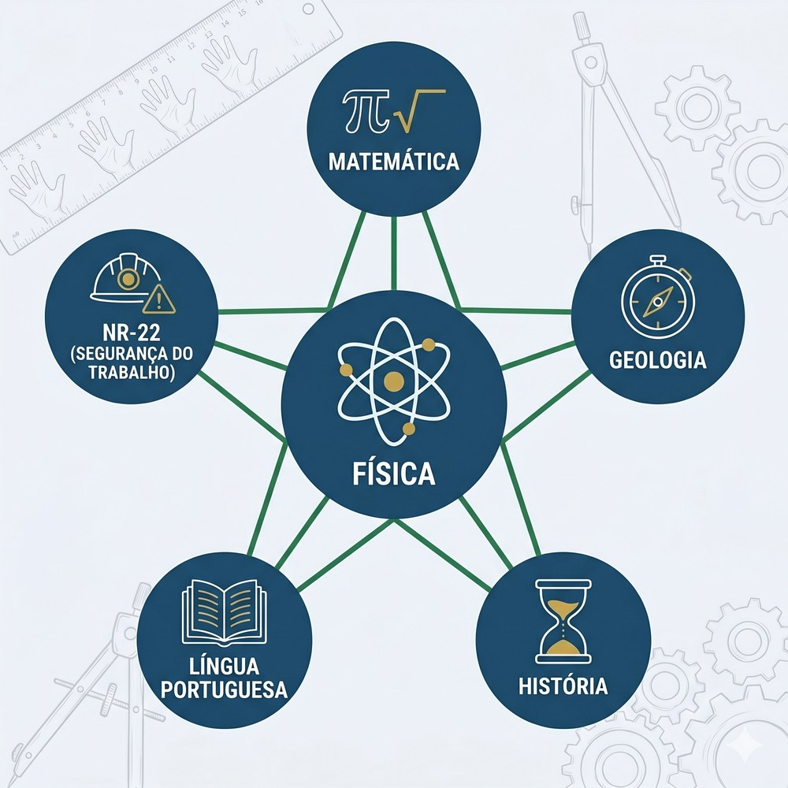
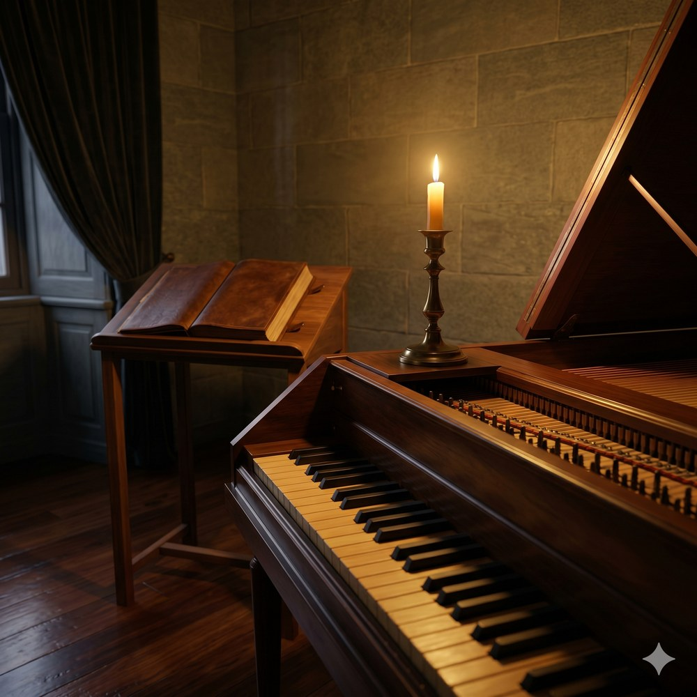

“Conta o que é contável, mede o que é mensurável; o que não for mensurável, torna-o mensurável.”
Pedro desceu a Rua Cláudio Manoel devagar.
Era sábado de maio. A névoa que cobria Ouro Preto desde a madrugada ainda não havia cedido, e o frio úmido dos 1 100 metros de altitude tornava a pedra do calçamento escorregadia sob os tênis. A rua descia em direção ao Largo do Coimbra com a inclinação característica das ladeiras históricas da cidade — o tipo de ladeira que, depois de alguns meses, você aprende a descer num ângulo ligeiramente oblíquo para não derrapar.
Pedro conhecia bem esse caminho. Mas naquela manhã havia algo diferente: Sofia e Lucas o haviam chamado para a Feirinha de Pedra-Sabão com a promessa de que o Prof. Felipe estaria lá. Não na escola, não na sala de aula — na feirinha. “Apareça cedo,” ele havia dito no grupo da turma, “antes de eu tomar o segundo café.”
O Largo do Coimbra abriu-se à frente quando Pedro dobrou à esquerda na Rua Randolfo Bretas. À sua direita, a Igreja São Francisco de Assis — obra de Aleijadinho, fachada em pedra-sabão cinza esculpida com o medalhão de São Francisco no centro, dois campanários laterais que subiam em suave perspectiva barroca. À sua frente, mais de cinquenta bancas de artesanato se estendiam pelo largo. Pedra-sabão polida: vasos, tabuleiros de xadrez, esculturas, pratos, relógios de parede, panelas e miniaturas de igrejas. O cheiro era mineral e levemente gorduroso — talco de rocha e cera de carnaúba, usada no polimento final.
Sofia e Lucas já estavam lá, diante da banca de Seu Geraldo.
Seu Geraldo era um artesão de cabelos brancos e mãos grandes e calejadas — quarenta anos esculpindo pedra-sabão, as unhas permanentemente escurecidas pela poeira da rocha. Ele trabalhava em silêncio, movendo uma grosa ao longo de um bloco verde-acinzentado com movimentos lentos e precisos, como quem não tem pressa porque sabe exatamente o que está fazendo.
Sobre a banca, entre as peças já acabadas, havia uma régua artesanal de madeira escura. Não uma régua escolar de plástico transparente: uma régua de trabalho, grossa, polida pelo uso, com marcações gravadas a faca. Pedro pegou-a sem pensar.
As marcas não eram centímetros. Eram doze divisões por segmento — doze traços igualmente espaçados por palmo, com subdivisões menores de três em três.
— Base 12 — disse uma voz familiar. — Régua duodecimal.
O Prof. Felipe estava de pé atrás do toldo lateral, com uma xícara de café na mão, como quem já estava ali antes de todo mundo. Óculos de metal retangular, barba curta, casaco sobre a camiseta do IFMG. O tipo de pessoa que nunca parece ter chegado porque sempre parece já ter estado.
— Por que 12 e não 10? — Pedro perguntou, com o tom direto de quem quer a versão curta. — O sistema métrico inteiro é base 10. Por que um artesão usaria outra coisa?
O Prof. Felipe ergueu a mão direita aberta, com o polegar livre.
— Quantas divisões você vê nessa mão? — disse ele.
Pedro olhou. Quatro dedos, além do polegar.
— Quatro.
— Conte as falanges — disse o Prof. Felipe. E tocou o polegar nas três falanges do indicador: um, dois, três. Depois do médio: quatro, cinco, seis. Do anular: sete, oito, nove. Do mínimo: dez, onze, doze. — Esta mão conta doze. Com a outra, você registra as dúzias. Uma dúzia, duas dúzias, três dúzias — até sessenta. Sem lápis, sem papel.
Sessenta. Com as duas mãos abertas.
— Tudo bem — disse Pedro. — Mas pra que serve isso hoje em dia? O GPS do celular não usa base 12.
O Prof. Felipe sorriu e tirou o celular do bolso. A tela mostrava as coordenadas do ponto onde estavam:
— Vinte graus, vinte e três minutos e dezoito segundos sul. — Ele pausou. — Isso é exatamente a mesma estrutura de uma hora num relógio: horas, minutos, segundos. A mesma base 60 que os babilônios inventaram há quatro mil anos. E o 60 não é por acaso: é cinco dúzias. Cinco dúzias de doze.
Pedro olhou para a régua na mão, para o GPS no celular, para a Igreja de São Francisco ao fundo com seus dois campanários barrocos em pedra-sabão — a mesma pedra que Seu Geraldo esculpia ali, a menos de vinte metros.
A régua e o GPS. O artesão do século XVIII e o satélite do século XXI. E entre eles, o número doze — intocado, persistente, matematicamente superior ao dez para quem precisa dividir com precisão.
Sofia abriu o caderno instintivamente, como sempre fazia quando algo importante estava para ser dito. Lucas levantou os olhos do bloco de pedra-sabão que estava examinando e os fixou no Prof. Felipe com aquele olhar paciente de quem quer ouvir a história inteira antes de comentar.
Pedro colocou a régua de volta sobre a banca com cuidado.
— Eu uso base 12 o tempo todo — disse ele devagar. — E nunca soube.
O Prof. Felipe assentia.
— Vamos descobrir de onde veio, onde mais aparece, e por que nenhuma revolução matemática — nem a francesa de 1793, nem o sistema métrico de 1875 — conseguiu eliminar o número doze da experiência humana.

A cena acima acontece num lugar real: a Feira de Pedra-Sabão do Largo do Coimbra existe em Ouro Preto desde 1995 (oficializada em 1999), com mais de cinquenta bancas de artesanato em pedra-sabão dispostas em frente à Igreja São Francisco de Assis — a obra-prima de Aleijadinho, datada de 1766–1810.
Como acessar e usar o Street View: 1. Acesse o link abaixo — ou abra o Google Maps e pesquise por “Largo do Coimbra, Ouro Preto, MG”. 2. Clique no ícone do boneco amarelo (Pegman) no canto inferior direito do mapa e arraste-o até a rua ou local desejado. 3. Solte o boneco sobre a rua destacada em azul — você entrará no modo Street View. 4. Use as setas na tela para caminhar e o mouse (ou o dedo, no celular) para girar a câmera 360°. 5. Você vai encontrar as bancas de pedra-sabão com as esculturas características e, ao fundo, a fachada barroca da Igreja São Francisco de Assis em pedra-sabão cinza-esverdeada — a mesma que Pedro via enquanto segurava a régua duodecimal de Seu Geraldo.
O mesmo largo onde Pedro segurou uma régua de base 12 tem coordenadas GPS que usam minutos e segundos — herança direta da mesma matemática babilônica. Ouro Preto é isso: quatro mil anos de medição em cada esquina.
Muito antes de existirem algarismos ou calculadoras, os povos da Mesopotâmia — sumérios e babilônios — já contavam em base 12 usando as falanges da mão. O método é elegante: com o polegar da mão direita, contam-se as três falanges de cada um dos quatro dedos restantes, totalizando doze posições distintas.
Muito antes de existirem algarismos ou calculadoras, os povos da Mesopotâmia — sumérios e babilônios — já contavam em base 12 usando as falanges da mão. O método é elegante: com o polegar da mão direita, contam-se as três falanges (proximal, média e distal) de cada um dos quatro dedos restantes, totalizando doze posições distintas. Com a outra mão, levantavam um dedo para cada dúzia completada — permitindo contar até 60 sem nenhum instrumento externo. Essa técnica está registrada em tábuas de argila datadas de aproximadamente 3 000 a.C. Em Ouro Preto, artesãos de pedra-sabão como Seu Geraldo, da Feirinha do Largo do Coimbra, herdaram essa tradição pelos cânones de medição ibérica trazidos pelos colonizadores portugueses no século XVIII.
Um sistema de numeração posicional é aquele em que o valor de um dígito depende de sua posição na escrita do número. A base define quantos símbolos distintos o sistema utiliza antes de “virar uma casa”: na base 10, temos os dígitos 0–9; na base 12, precisamos de doze símbolos. A principal vantagem matemática do 12 sobre o 10 está em seus divisores: 12 é divisível por 1, 2, 3, 4, 6 e 12 — seis divisores exatos. O número 10 possui apenas quatro: 1, 2, 5 e 10. Isso torna as frações em base 12 muito mais precisas.
Na mineração, divisões exatas importam. Ciclos de 12 turnos podem ser divididos em dois grupos de 6, três de 4, quatro de 3 ou seis de 2 — sem sobra em nenhum caso. O técnico em mineração encontra o sistema duodecimal também nos equipamentos importados: diâmetro de tubulações e hastes de perfuratriz são especificados em polegadas, unidade subdividida em frações duodecimais. Um técnico que não domina a lógica do 12 perde precisão na interpretação de especificações de campo.
Uma Mão Conta, Outra Registra
O Prof. Felipe colocou a mão direita aberta diante de Pedro, Sofia e Lucas, com o polegar livre.
— Aqui está o problema dos nossos antepassados: como contar mais de dez sem lápis e papel?
Ele tocou com o polegar as três falanges do indicador: um, dois, três. Depois do médio: quatro, cinco, seis. Do anular: sete, oito, nove. Do mínimo: dez, onze, doze.
— Esta mão conta as unidades. Até doze. — Levantou um dedo da mão esquerda. — Esta registra as dúzias. Uma dúzia. — Dois dedos. — Duas dúzias: vinte e quatro. — Cinco dedos. — Cinco dúzias: sessenta.
Sessenta. Com duas mãos abertas, sem caneta, sem papel.
| Símbolo | Grandeza | Observação |
|---|---|---|
| N | Valor numérico | adimensional |
| b | Base do sistema | b = 10 (decimal); b = 12 (duodecimal) |
| di | Dígito na posição i | 0 ≤ di < b |
| Número | Divisores exatos | Quantidade | Frações exatas |
|---|---|---|---|
| 10 | 1, 2, 5, 10 | 4 | 1/2, 1/5, 1/10 |
| 12 | 1, 2, 3, 4, 6, 12 | 6 | 1/2, 1/3, 1/4, 1/6, 1/12 |
| 60 | 1, 2, 3, 4, 5, 6, 10, 12, 15, 20, 30, 60 | 12 | todas as frações de 1/2 a 1/60 com denominador ≤ 12 |
— Então 1/3 de hora é 20 minutos exatos — disse Pedro, olhando para o quadro. — Mas 1/3 de 100 segundos é 33,33… repetido.
— Exatamente por que os relojoeiros medievais não escolheram base 10 para subdividir a hora — disse o Prof. Felipe. — E por que os artesãos de Ouro Preto não usavam centímetros para dividir o palmo. O 12 não é arcaísmo. É aritmética inteligente que sobreviveu às revoluções porque funciona.
As primeiras medições de tempo foram astronômicas: a observação do ciclo solar (dia e noite) e do ciclo lunar (mês). Os egípcios do Médio Império usavam gnômones — hastes verticais cuja sombra marcava as horas do dia.

Os relógios mecânicos de escapamento chegaram às torres das igrejas de Minas Gerais no século XVIII. As torres da Igreja de Nossa Senhora do Carmo e da Basílica de Nossa Senhora do Pilar, em Ouro Preto, tinham relógios que organizavam a vida da cidade colonial desde a madrugada — as horas canonicais ditavam os turnos nas minas, a abertura dos mercados e o horário das missas. Em 1967, a 13.ª Conferência Geral de Pesos e Medidas redefiniu o segundo com base nas oscilações do átomo de césio-133.
No Sistema Internacional de Unidades (SI), a unidade de tempo é o segundo (s), definido como a duração de exatamente 9 192 631 770 oscilações da radiação emitida na transição hiperfina do estado fundamental do átomo de césio-133. A Terra leva 86 400 s para completar uma rotação em relação ao Sol (1 dia solar médio), pois 1 dia = 24 horas × 60 min/hora × 60 s/min = 86 400 s.
Na mineração, o tempo é recurso e risco simultaneamente. O controle de “horas-homem trabalhadas” (HHT) é a base do cálculo da Taxa de Frequência de Acidentes (TFA), exigida pela NR-22. Em operações de desmonte com explosivos, o retardo de milissegundos entre cargas sequenciais determina a direção e a fragmentação do bloco de rocha: um erro de 100 ms pode transformar um desmonte controlado em projeção de fragmentos sobre a equipe de campo.
O Sino do Pilar e o Átomo de Césio
O Prof. Felipe tirou do bolso um caderno espiral e o abriu numa tabela de conversões de tempo.
— Quando o sino do Pilar bate — disse ele, apontando na direção da torre —, o que está medindo de fato?
— Um fenômeno periódico — disse Pedro. — Um pêndulo, um mecanismo de escapamento. O sino bate a cada intervalo regular.
— Exatamente. Tempo não é algo que medimos diretamente — medimos eventos que se repetem e chamamos de “tempo” o número de repetições multiplicado pelo período de cada uma.
| Símbolo | Grandeza | Unidade SI |
|---|---|---|
| t(s) | Tempo em segundos | s |
| t(dias) | Tempo em dias | adimensional |
| 86 400 | Segundos por dia (24 × 60 × 60) | s/dia |
| Unidade | Símbolo | Equivalência | Contexto típico |
|---|---|---|---|
| Milissegundo | ms | 10⁻³ s | retardo de detonação (NR-22) |
| Segundo | s | 1 s | unidade base do SI |
| Minuto | min | 60 s | tempo de evacuação |
| Hora | h | 3 600 s | turno de trabalho |
| Dia solar médio | dia | 86 400 s | ciclo operacional |
| Ano trópico | ano | ≈ 31 556 926 s | planejamento de lavra |
— O sino do Pilar bate horas — disse Pedro, olhando para a torre ao longe. — O detonador bate em milissegundos. Mesma física, escalas diferentes.
— Mesma física, quatro séculos de diferença — confirmou o Prof. Felipe.
Os babilônios dividiram o círculo em 360 graus há mais de 4 000 anos, baseados em dois fatos simultâneos: a aproximação do ano em 360 dias e a excepcional divisibilidade do número 360, que possui 24 divisores inteiros.

Os engenheiros coloniais que projetaram as igrejas barrocas de Ouro Preto no século XVIII usavam astrolábios e bússolas calibradas nessa divisão para orientar galerias e eixos dos templos. Henri Gorceix, engenheiro e astrônomo francês, fundou a Escola de Minas de Ouro Preto em 1876 com teodolitos alemães fabricados em Jena que permitiram os primeiros levantamentos topográficos sistemáticos do Quadrilátero Ferrífero.
Um ângulo plano mede a abertura entre dois semiplanos que compartilham uma aresta comum. O SI adota o radiano (rad) como unidade oficial: 1 radiano é o ângulo central que subtende um arco de comprimento igual ao raio da circunferência. Uma volta completa equivale a 2π radianos = 360°. Para um ângulo de 1° em uma galeria de 300 m, o desvio lateral é: desvio = 300 × tan(1°) ≈ 300 × 0,01746 ≈ 5,2 m.
Todo levantamento topográfico de uma mina começa com medições angulares. O técnico em mineração usa o teodolito eletrônico (estação total) para medir ângulos horizontais e verticais com precisão de segundos de arco. A NR-22 exige que as plantas de lavra sejam orientadas em relação ao Norte geográfico com indicação explícita das direções das galerias em graus.
O Instrumento que Gorceix Trouxe
O Prof. Felipe tirou do casaco uma bússola compacta — uma Brunton de alumínio, com o limbo graduado de 0° a 360° — e a posicionou horizontalmente sobre a banca de Seu Geraldo, aguardando a agulha estabilizar.
— Por que 360? Por que não 400, que seria mais decimal?
— A Revolução Francesa tentou 400 graus — o gradiano. — O Prof. Felipe cruzou os braços. — Falhou. O 360 tem 24 divisores inteiros; o 400 tem apenas 20.
| Símbolo | Grandeza | Unidade SI |
|---|---|---|
| θ(rad) | Ângulo em radianos | rad |
| θ(°) | Ângulo em graus | ° (grau, tolerado pelo SI) |
| π | Constante matemática | ≈ 3,141 592 (adimensional) |
| Ângulo | Radianos | Minutos de arco | Referência prática |
|---|---|---|---|
| 360° | 2π ≈ 6,283 rad | 21 600′ | volta completa; bússola; GPS |
| 90° | π/2 ≈ 1,571 rad | 5 400′ | ângulo reto; galeria perpendicular |
| 60° | π/3 ≈ 1,047 rad | 3 600′ | 1 setor duodecimal (1/6 do círculo) |
| 30° | π/6 ≈ 0,524 rad | 1 800′ | 1 mês babilônico; 1/12 do círculo |
| 1° | π/180 ≈ 0,01745 rad | 60′ | unidade base do azimute e do GPS |
O GPS é um sistema de trilateração baseado em sinais de rádio enviados por satélites em órbita média. Cada satélite transmite sua posição e o instante exato de emissão do sinal.

O GPS foi desenvolvido pelo Departamento de Defesa dos Estados Unidos a partir de 1973. No Brasil, a Agência Nacional de Mineração (ANM) passou a exigir o georreferenciamento GPS de todas as áreas licenciadas a partir dos anos 2000. O Google Earth foi lançado em 2005 e democratizou o acesso às imagens de satélite em alta resolução.
O receptor calcula a diferença de tempo entre a emissão e a recepção e multiplica pela velocidade da luz no vácuo — c = 299 792 458 m/s — para obter a distância ao satélite. Com quatro satélites simultâneos, o receptor resolve um sistema de quatro equações e determina latitude, longitude e altitude. A precisão padrão do GPS civil é de ±3 m a ±5 m; com correção diferencial GNSS-RTK, atinge ±1 cm.
O técnico em mineração usa GPS de alta precisão para marcar a posição de furos de sondagem, cristas de talude e estruturas de contenção. A ANM exige o georreferenciamento GPS de todas as frentes de lavra ativas. Um erro de conversão entre DMS e DD pode deslocar um ponto registrado em dezenas de metros, comprometendo o licenciamento ambiental.
Do Babilônico ao Satélite — Em Graus, Minutos e Segundos
O Prof. Felipe virou o celular para Pedro mostrar a tela do GPS:
— Latitude vinte graus, vinte e três minutos e dezoito segundos sul. — Pedro leu devagar, como quem percebe algo pela primeira vez. — É como ler a hora num relógio.
| Símbolo | Grandeza | Observação |
|---|---|---|
| DD | Graus decimais | número real |
| graus | Parte inteira | número inteiro |
| minutos | Minutos de arco (0–59) | número inteiro |
| segundos | Segundos de arco (0–59,99…) | número real |
| Contexto | Equipamento | Precisão | Formato típico |
|---|---|---|---|
| Georreferenciamento de lavra (ANM) | GNSS-RTK | ±1 cm | DD (para SIG) |
| Topografia de campo | GPS geodésico | ±1 m | DMS ou DD |
| Marcação de furo de sondagem | GPS civil | ±3–5 m | DMS ou DD |
| Aplicativo de celular | GPS civil integrado | ±3–5 m | DMS ou DD |
| Google Earth Pro (leitura) | Imagem de satélite | depende do zoom | DD ou DMS configurável |
A bússola magnética chegou ao Brasil com os navegadores portugueses do século XV e foi adotada pelos mineradores de Minas Gerais desde as primeiras concessões de lavra do século XVII.

O conceito de azimute como ângulo orientado para o Norte data dos astrônomos islâmicos medievais, que o adotaram para determinar a direção de Meca a partir de qualquer ponto do globo. A navegação oceânica europeia universalizou os azimutes e rumos náuticos a partir do século XV, e essa tradição migrou diretamente para a cartografia e a mineração modernas.
O azimute é um ângulo medido no plano horizontal, a partir do Norte geográfico (ou magnético), no sentido horário, variando de 0° a 360°. O rumo (bearing) expressa a mesma direção como ângulo de 0° a 90° em relação ao Norte ou ao Sul, com indicação do quadrante (N, S, E, W). O contra-azimute é o azimute oposto: se o técnico segue em azimute α, o retorno exige α ± 180°.
O técnico em mineração usa azimutes para descrever a orientação de galerias subterrâneas, eixos de britagem, canais de drenagem e rampas de acesso. A NR-22 exige que toda planta de lavra indique as direções principais a partir do Norte geográfico. Na navegação de haul trucks autônomos, os algoritmos de rota computam azimutes contínuos para calcular trajetórias de mínima distância.
Bússola na Mão, Galeria no Mapa
O Prof. Felipe posicionou a bússola Brunton horizontalmente sobre a banca de Seu Geraldo e aguardou a agulha estabilizar.
— Se eu estou aqui no Largo do Coimbra, e preciso ir até a entrada de uma mina a nordeste, qual é o azimute?
— Quarenta e cinco graus — disse Pedro.
— Azimute 045°. Rumo: N45°E. Quando eu sair da galeria e quiser voltar, qual é o azimute de retorno?
— 045 mais 180 — Pedro calculou. — 225°.
— Contra-azimute. Rumo S45°W.
| Símbolo | Grandeza | Observação |
|---|---|---|
| Az | Azimute de ida | ° (0° a 360°, sentido horário a partir do Norte) |
| Azcontra | Contra-azimute (retorno) | ° (sempre oposto a Az) |
| Quadrante | Faixa de azimute | Fórmula do rumo | Exemplo |
|---|---|---|---|
| NE (nordeste) | 0° a 90° | N(Az)E | Az 045° → N45°E |
| SE (sudeste) | 90° a 180° | S(180°−Az)E | Az 135° → S45°E |
| SW (sudoeste) | 180° a 270° | S(Az−180°)W | Az 225° → S45°W |
| NW (noroeste) | 270° a 360° | N(360°−Az)W | Az 315° → N45°W |
O sino da Basílica do Pilar bateu doze vezes.

Pedro contou instintivamente — um velho hábito — e parou no doze. Olhou para Seu Geraldo, que havia acabado de polir uma pequena esfera de pedra-sabão. Verde-acinzentada, fria ao toque, com a superfície tão lisa que refletia a luz difusa do largo.
— Quanto? — Pedro perguntou.
— Doze reais — disse Seu Geraldo, sem cerimônia.
Pedro riu, pagou e ficou com a esfera na palma da mão.
Olhou para a feirinha inteira — as bancas, os artesãos, os celulares com GPS, os dois campanários da Igreja São Francisco de Assis que subiam acima das tendas de lona. A névoa havia se dissipado completamente. O sol de maio dava de cheio na pedra-sabão cinza-esverdeada da fachada barroca.
Sofia leu em voz alta as anotações do caderno:
— Dedos das mãos. Tempo. Ângulos. GPS. Azimutes. E tudo saiu de uma mão com o polegar livre.
— Cinco assuntos ou um único assunto — disse Pedro, pesando a esfera na mão. — Cinco formas de medir o mundo. Com o mesmo número embaixo de tudo.
Lucas olhava para os campanários.
— Aleijadinho calculou a curvatura desses arcos em graus, minutos e segundos. Há duzentos e cinquenta anos. Com uma bússola e um teodolito. Sobre essa mesma pedra.
O Prof. Felipe havia começado a se afastar em direção à Rua Cláudio Manoel, xícara vazia na mão, com os óculos refletindo o céu azul de Ouro Preto. Antes de sumir na ladeira, virou-se uma última vez.
— Na próxima trilha, vamos descobrir que os ponteiros do relógio e as correias transportadoras de uma britagem falam o mesmo idioma. Você vai aprender a ouvi-los.
Pedro guardou a esfera de pedra-sabão no bolso do uniforme. Doze reais. Doze marcas por palmo na régua de Seu Geraldo. Doze horas no mostrador de cada relógio do mundo. Doze badaladas do sino.
Um número que, há quatro milênios, um povo havia descoberto ser mais divisível que qualquer outro que cabia em duas mãos. E que nenhuma revolução havia conseguido tirar do centro do tempo, do espaço e da posição.
Atividades que articulam a Física da Trilha T02 com outras disciplinas do currículo do Técnico em Mineração Integrado ao Ensino Médio. Cada atividade exige análise, síntese ou avaliação — Bloom L4 a L6.
Quando a Física se encontra com outra disciplina, o caminho até a resposta segue oito etapas — sempre as mesmas. Esse protocolo chama-se Componente 5 e é o método que técnicos de mineração usam para resolver problemas reais. Pratique-o aqui: você vai reaplicá-lo integralmente no Trabalho (TR) desta trilha.

| Etapa | Nome | O que fazer |
|---|---|---|
| 1 | O que está sendo pedido? | Releia o enunciado. Escreva com suas palavras o que é pedido. |
| 2 | Quais são os dados? | Liste cada grandeza com seu símbolo, valor e unidade. |
| 3 | Quais são as hipóteses? | Declare o que vai assumir (atrito nulo, regime estacionário etc.). |
| 4 | Qual é o desenho do problema? | Faça um esboço, diagrama ou esquema simples da situação. |
| 5 | Quais são as equações? | Identifique a equação do TT. Isole a variável pedida. |
| 6 | Cálculo com unidades | Substitua os valores. Acompanhe as unidades até o resultado. |
| 7 | Análise de resultados | O resultado faz sentido? Compare com valores típicos. |
| 8 | Responda o que foi pedido | Formule a resposta completa ao que o problema perguntou. |
Compare os divisores dos números 10, 12 e 60 usando o Quadro 1 desta trilha. Em seguida, calcule: (a) 1/3 de 1 hora em minutos; (b) 1/3 de 100 segundos; (c) 1/4 de 12 horas em horas; (d) 1/4 de 10 horas em horas. Organize os resultados numa tabela comparando base 10 e base 12. Escreva um parágrafo argumentativo explicando por que os relojoeiros medievais escolheram dividir a hora em 60 minutos — e não em 100 — mesmo antes de conhecerem o sistema métrico decimal.
Um topógrafo mediu que a galeria principal de uma mina segue em azimute 070°. A galeria tem 250 m de comprimento. Calcule: (a) o rumo equivalente ao azimute 070°; (b) o contra-azimute de retorno; (c) o desvio lateral, em metros, que ocorreria se o azimute fosse lido com erro de 1° (use a aproximação: desvio ≈ comprimento × 0,01746). Discuta se esse desvio seria relevante para a NR-22.
Pesquise como Henri Gorceix utilizou o teodolito nos levantamentos topográficos do Quadrilátero Ferrífero após a fundação da Escola de Minas em 1876. Por que a base babilônica (graus, minutos, segundos) ainda era usada em pleno século XIX, mesmo após a adoção do sistema métrico decimal pela França em 1799? Elabore um parágrafo argumentativo de 8 a 10 linhas com a sua análise.
Escreva por extenso, em português correto, os seguintes valores desta trilha: (a) 86 400 s; (b) 31 556 926 s; (c) 9 192 631 770 oscilações por segundo; (d) 299 792 458 m/s. Em seguida, escreva um parágrafo de 6 a 8 linhas explicando, sem fórmulas, por que as coordenadas GPS do seu celular são expressas em graus, minutos e segundos de arco.
Um técnico de detonação precisa garantir que a equipe de evacuação percorra 180 m em terreno acidentado antes do disparo. A velocidade média de caminhada em ladeira íngreme é de 0,8 m/s. Calcule: (a) o tempo mínimo de evacuação em segundos; (b) o tempo em minutos e segundos. Se o detonador eletrônico tem um retardo programável de 500 ms, converta esse retardo para segundos e determine o tempo total. Discuta se o retardo de 500 ms altera significativamente o planejamento de segurança.
“A música é um exercício oculto de aritmética, no qual a alma não sabe que está contando.”

A base 12 não mora apenas nos relógios e nas bússolas — ela vibra em cada acorde. A escala cromática ocidental divide a oitava musical em 12 semitons iguais, e essa divisão não é arbitrária: resulta de séculos de experimentação entre artesãos de órgãos, matemáticos e músicos. O fator multiplicativo entre semitons consecutivos é ¹²√2 ≈ 1,0595 — uma raiz duodécima, a mesma estrutura matemática que Pedro encontrou nas falanges de Seu Geraldo.
Quando Johann Sebastian Bach compôs O Cravo Bem-Temperado (1722), demonstrou que as 12 notas cromáticas permitiam tocar em qualquer tonalidade sem reafinar o instrumento — era a universalidade da base 12 aplicada ao som. Em Ouro Preto, os órgãos barrocos da Igreja de São Francisco de Assis e da Matriz do Pilar foram construídos sobre esse mesmo princípio: tubos de estanho e madeira cortados em proporções que obedecem à progressão geométrica de razão ¹²√2.
Medir o tempo em 12 horas, o ângulo em graus múltiplos de 12, e o som em 12 semitons não é coincidência — é a herança de uma civilização que descobriu, por caminhos diferentes, que o 12 é o número mais divisível entre os pequenos inteiros.
BONJORNO, J. R. Identidade Saraiva: Física. São Paulo: Saraiva, 2024.
MAXIMO, A. et al. Física: contexto & aplicações. São Paulo: Scipione, 2013.
TALAVEIRA, A. C. et al. Física: ensino médio, v. único. São Paulo: Nova Geração, 2005.
BLOOM, Benjamin S. (org.). O desenvolvimento de talentos na juventude. Porto Alegre: Globo, 1988.
HEWITT, Paul G. Física conceitual. 12. ed. Porto Alegre: Bookman, 2015.
NICOLELIS, Miguel. O verdadeiro criador de tudo: como o cérebro humano esculpiu o universo que conhecemos. São Paulo: Planeta, 2020.
PIAZZI, Pierluigi. Aprendendo inteligência: manual de instruções do cérebro para estudantes em geral. São Paulo: Aleph, 2008.
PIAZZI, Pierluigi. Inteligência em concursos: manual de instruções do cérebro para concurseiros e universitários. São Paulo: Aleph, 2013.